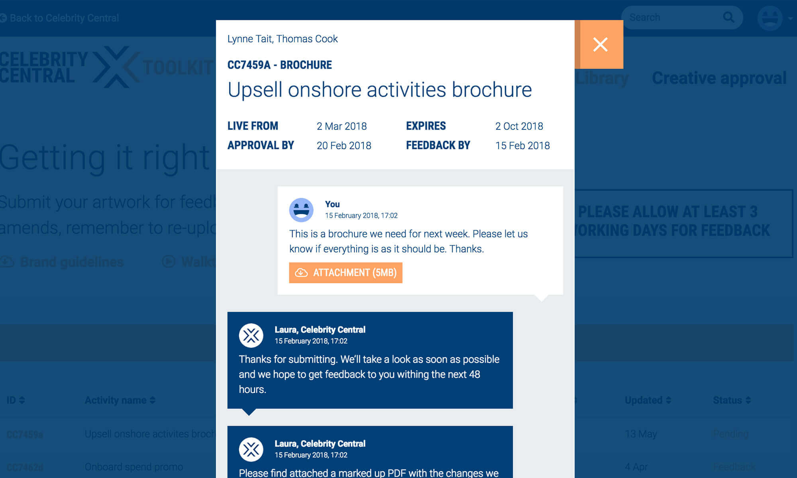
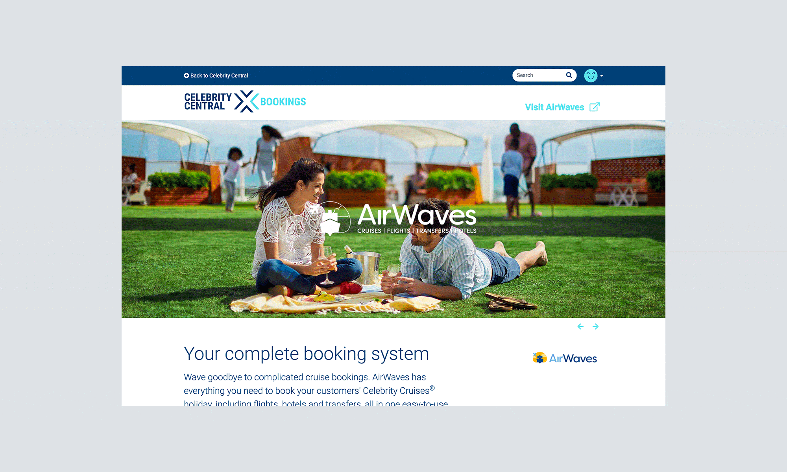

Celebrity Central is a somewhat unexpected result of what we were approached to do. It was originally proposed as an alternative to their existing e-learning platform. They were pleased with the old platform, but it was very dated and extremely limiting in what it could do. Assessing the strengths and weaknesses of the platform served as a great starting point for discussions. What quickly came out of those discussions was the question, “How do we speak to trade?” and became obvious that the way Celebrity speaks to its consumers is very different to the kind of language that the travel trade are likely to respond to. Two very different audience types, with the latter not having been fully considered in this way until now.

This manifested into tone of voice workshops involving trade professionals, which in turn lead us down a path to find out how Celebrity could better serve their needs. Agents were requesting access to relevant resources, templates they could use themselves, voiced frustrations with where they downloaded materials and learned of developments, campaigns and offers. It became clear that this needed to be something bigger than simply a replacement training programme.

With these sessions we were able to start defining what they needed by combining insights from ourselves, the users and the client. Agents revealed that they were more likely to turn to Google for their information, news, pictures, etc. So we decided to make our own “Google” for them, with the search bar front-and-centre. Rather than going to five or six different sites—each with their own login procedures—they could go to one place, sign in once, and find everything they needed.
Over a year in planning and development, working hand-in-hand with the travel trade, we created a one-stop integrated hub featuring news, incentives, campaign information, e-learning, brand downloads, and more. This was Celebrity Cruises UK & Ireland's largest ever agent-dedicated investment.
